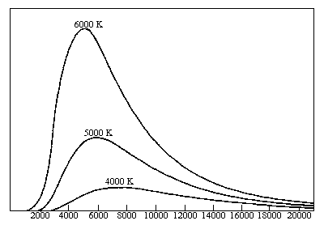
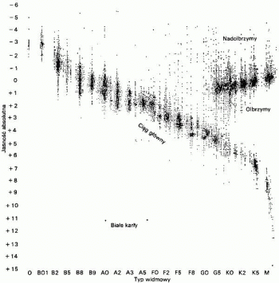

Astronomia to nauka o ciałach niebieskich, ich budowie, ruchach, pochodzeniu i ewolucji oraz o materii rozproszonej w przestrzeni kosmicznej. Oto podstawowe pojęcia z nia związane:
Astronomia to nauka o ciałach niebieskich, ich budowie, ruchach, pochodzeniu i ewolucji oraz o materii rozproszonej w przestrzeni kosmicznej. Oto podstawowe pojęcia z nia związane:
Słońce - to nazwa jedynej gwiazdy naszego układu planetarnego (zwanego także słonecznym), a zarazem najbliższej widocznej z Ziemi; stanowi główne źródło energii docierającej do nas z przestrzeni kosmicznej.
Księżyc - pisany z wielkiej litery to jedyny naturalny satelita Ziemi, zaś z małej litery to synonim wyrażenia naturalny satelita.
Galaktyka - pisana z wielkiej litery to nasza galaktyka, w której znajduje się nasz układ planetarny. Małą literą to nazwa skupiska kilku milionów gwiazd.
Niebo = sfera niebieska = kula niebieska
Magnitudo = wielkość gwiazdowa, oznaczamy mag lub m.
Deklinacja
Rektascensja
Ekliptyka to koło wielkie na niebie nachylone do równika niebieskiego pod kątem 23o26'' i przecinającym się z równikiem w punktach równonocny wiosennej (inaczej w punkcie Barana) i jesiennej (w punkcie Wagi). Punkt ekliptyki leżący najbliżej bieguna niebieskiego północnego nazywa się stanowiskiem letnim Słońca, czyli punktem Koziorożca.
Parsek (ps) - astronomiczna jednostka odległości.
1 parsek = 3,26 lat świetlnych = 3,086 · 1013 km
Rok świetlny (r. św.) - astronomiczna jednostka odległości. Jeden rok świetlny jest równy odległości, jaką przebędzie światło w ciągu jednego roku ziemskiego. Używa się także sekund i minut świetlnych (do określania mniejszych odległości), lata zaś są często wyrażane w tysiącach, milionach (większe odległości).
1 r. św. (lata świetlne - l. św.) = 0,3066 ps = 63240 AU = 9,46 · 1012 km
Jednostka astronomiczna (Astronomical Unit - AU, UA) - astronomiczna jednostka odległości równa średniej odległości Ziemi od Słońca, używana do wyrażania stosunkowo małych odległości w skali kosmicznej.
1 AU = 499 sekund świetlnych = r. św.
Astronawigacja
Gdy patrzymy nocą na niebo wydaje się nam, że gwiazdy wykonują nad nami ruch w kierunku zachodnim. W rzeczywistości jednak to Ziemia obraca się wokół własnej osi w kierunku wschodnim wykonując tzw. ruch dobowy. Przyjęte jest jednak założenie, że Ziemia pozostaje nieruchoma, a sfera niebieska wykonuje pozorny ruch dobowy o prędkości równej prędkości rzeczywistego ruchu Ziemi. Łatwo można obliczyć jej wartość kątową, bo jeśli w ciągu 24 godzin Ziemia pokonuje 360o to ruch dobowy odbywa się z prędkością 15o. Należy w tym miejscu zaznaczyć, że doba gwiazdowa trwa 24 h, a doba słoneczna (około) 23 h 56 min.
W tym pozornym ruchu uczestniczą wszystkie ciała niebieskie, należy jednak podzielić je na kilka grup:
- Gwiazdy (poza Słońcem) oddalone na tyle, aby móc zignorować w obserwacji ich własny ruch;
- Planety naszego Układu, Słońce i Księżyc, których wypadkowym ruchem jest dla obserwatora ziemskiego złożenie ruchu dobowego i własnego.
W praktyce można wykonać pewne ćwiczenie: Jeśli nastawilibyśmy aparat fotograficzny na czas naświetlania kilku godzin, to stwierdzilibyśmy po oglądnięciu zdjęcia, że gwiazdy zakreśliły na niebie łuki okręgów o promieniach równych ich odległością od bieguna niebieskiego, za który można przyjąć Gwiazdę Polarną (Polaris, na półkuli północnej). Pewne gwiazdy chowają się za widnokręgiem lub się zza niego wyłaniają, więc wschodzą lub zachodzą. Możemy sformułować warunki zachodzenia (wschodzenia) lub niezachodzenia (niewschodzenia) gwiazdy:
- Jeżeli deklinacja
jest jednoimienna z
 oraz większa od
to ciała niebieskie nigdy nie zachodzą. Są to tzw. ciała okołobiegunkowe (są widoczne na niebie o każdej porze roku na danej szerokości
).
oraz większa od
to ciała niebieskie nigdy nie zachodzą. Są to tzw. ciała okołobiegunkowe (są widoczne na niebie o każdej porze roku na danej szerokości
). - Jeżeli deklinacja jest mniejsza od to ciała niebieskie wschodzą i zachodzą.
- Jeżeli deklinacja
jest różnoimienna z
oraz większa od wartości bezwzględnej
to ciała nie wschodzą. Są to tzw. ciała przeciwbiegunkowe (nie są nigdy widoczne na danej szerokości
).
Powyższe stwierdzenia dotyczą jedynie gwiazd odległych od naszej planety. Słońce, jak łatwo możemy zaobserwować, "porusza się" po niebie inaczej niż inne gwiazdy. Gdyby każdego dnia zaznaczać punkty położenia Słońca o danej godzinie to otrzymalibyśmy roczną pozorną drogę Słońca zwaną ekliptyką słoneczną.
Klasyfikacja obiektów astronomicznych
Aby sklasyfikować obiekty widoczne nocą na niebie już w starożytności astronomowie określili sześciostopniową skalę jasności gwiazd według założenia, że najjaśniejsze gwiazdy to gwiazdy pierwszej wielkości, a ledwo widoczne gołym okiem to gwiazdy szóstej wielkości gwiazdowej. Kiedy w czasach współczesnych wynaleziono przyrządy pozwalające na zmierzenie rzeczywistej jasności gwiazd, stwierdzono że te najjaśniejsze świecą 100 razy mocniej od tych najsłabszych. Użyto skali logarytmicznej i dlatego dziś stosunek jasności gwiazdy o wielkości n do innej o wielkości n+1 wynosi . Wynika z tego, że gwiazdy, które różnią się o 5 wielkości gwiazdowych różnią się 100 razy swoim blaskiem. Można to zapisać w następujący sposób:
gdzie In, In+1 to natężenie światła dla n i n+1 wielkości gwiazdowej.
Powyższe zdefiniowanie pojęcia gwiazdowego obowiązuje do dzisiaj, a ponieważ dziś możemy obserwować gwiazdy niewidoczny gołym okiem oraz wiemy że istnieją obiekty jaśniejsza dla obserwatora na Ziemi, to wielkości gwiazdowe przyjmują zarówno wartości ujemne jak i większe od 6. Oto przykładowe jasności ciał niebieskich obserwowane z Ziemi: Słońce -26,7 mag, Księżyc w pełni -12,7 mag, Wenus -4,5 mag, Syriusz -1,5 mag, Procjon +0,4 mag.
Wyprowadzimy teraz tzw. wzór Pogsona. Przyjmijmy że m i n są liczbami (nie musza być całkowite), które wyrażają wielkości gwiazdowe dwóch gwiazd, a In oraz Im to natężenia ich światła. Skoro In > Im to także m > n. Możemy więc zapisać że:
Wzór ten jest zapisywany też w innych postaciach - po zlogarytmowaniu:
oraz po pomnożeniu obustronnie przez 2,5:
(1)
Wzór Pogsona jest bardzo ważnym wzorem w astronomii, gdyż pozwala wyprowadzić związek pomiędzy jasnością obiektu a jego odległością, dzięki czemu możemy mając daną jasność gwiazdy obliczyć jej odległość od obserwatora. Aby to wykonać ustalono, że odległością "standardową" będzie 10 parseków (ps), a jasność w takiej odległości jasnością absolutną M wielkości gwiazdowych, zaś obserwowana przez nas gwiazda znajduje się w odległości D parseków i ma jasność widomą m. Po zastosowaniu powyższych założeń we wzorze Pogsona (1) otrzymamy:
(2)
Jak wiadomo z elementarnej optyki, natężenie światła słabnie z kwadratem odległości (jest odwrotnie proporcjonalne do kwadratu odległości). Zapiszemy to w następujący sposób:
(3)
Podstawiając wzór (3) do (2) otrzymamy:
(4)
który wykorzystujemy do obliczania jasności absolutnych gwiazd. I tak Słońce, chociaż ma jasność obserwowaną -26,7 mag, to po podstawieniu do wzoru (4) otrzymamy jasność absolutną ok. +6 mag.
Temperatura i widmo gwiazdy
Jeżeli poobserwujemy nocą nieco dokładniej niebo i gwiazdy, to zauważymy, że różnią się one od siebie odcieniem. Niektóre z nich mają barwę lekkoniebieską, inne żółtą lub czerwoną. Barwa danej gwiazdy jest dla nas informacją o temperaturze powierzchni gwiazdy. Najgorętsze gwiazdy o temperaturze kilkudziesięciu tysięcy kelwinów świecą na niebiesko. Nieco jaśniejsze gwiazdy są na niebieskobiało, biało i żółtobiało. Potem są gwiazdy żółte, pomarańczowe i czerwone. Nasze Słońce ma temperaturę powierzchni ok. 6000 K.
Fizycy, aby móc zastosować uzyskiwane informacje w obliczeniach założyli, że gazowy skład gwiazd ma optyczne właściwości zbliżone do tzw. ciała doskonale czarnego (doskonale chłonącego, czyli naprawdę nie istniejącego). Ciało doskonale czarne w pewnej temperaturze T emituje promieniowanie o różnych długościach fali. Linia krzywa określająca rozkład natężenia w widmie promieniowania ma jedno maksimum, a długość fali , dla której przypada to maksimum wyliczamy ze wzoru:
Związek powyższy to prawo Wiena (przesunięć) - długość maksymalna fali promieniowania jest odwrotnie proporcjonalna do temperatury bezwzględnej promieniowania ciała doskonale czarnego. Zależność tą obrazuje poniższy wykres (na osi pionowej względne natężenia rozkładu promieniowania):

Dla przykładowych temperatur: 4000 K, 5000 K i 6000 K wyraźnie widać, że im wyższa jest temperatura ciała, to tym dalej w stronę części krótkofalowej widma przesuwa się maksimum natężenia jego promieniowania. W świetle gwiazdy dominuje ta barwa, dla której przypada maksymalne natężenie promieniowania.
Jeżeli więc na podstawie obserwacji zbadamy przebieg promieniowania danej gwiazdy w widmie, otrzymamy wykres podobny do powyższego. Wykres obserwacji oczywiście nie będzie wyglądał tak idealnie jak powyższy, ale da się z niego odczytać przybliżoną wartość maksimum. Mając długość fali maksimum na podstawie wzoru Wiena można obliczyć temperaturę powierzchni gwiazdy.
Z wykresu wynika też inne elementarne prawo ciała doskonale czarnego - mianowicie, że całkowita energia wypromieniowana z jednostki powierzchni ciała doskonale chłonącego jest proporcjonalna do czwartej potęgi jego temperatury bezwzględnej:
gdzie . Jest to prawo Stefana-Boltzmanna.
Naukowcy, aby łatwiej było klasyfikować gwiazdy, stworzyli tzw. typy widmowe. Są one niczym innym jak tylko oznaczonymi widmami liniowymi. Podzielono je następująco: na 7 klas O, B, A, F, G, K, M oraz R, N, S, a dodatkowo każdą klasę na podklasy oznaczane cyframi od 0 do 9. Nasze Słońce jest gwiazdą klasy G2. Znając typ widmowy gwiazdy możemy określić z pewnym prawdopodobieństwem kolor tej gwiazdy (wszelkie niedokładności w barwie wywołane są np. obecością pyłu kosmicznego pomiędzy gwiazdą a obserwatorem).
Wykres H-R

Załóżmy, że wykonalibyśmy wykres jasności absolutnej (oś rzędnych) od ich temperatury (oś odciętych) dla bardzo dużej ilości gwiazd. Naszym oczom ukazałby się wykres, który z początkiem XX w. równocześnie i niezależnie od siebie wykonali dwaj fizycy Herzsprung i Russell (nazwany od pierwszych liter ich nazwisk - wykres H-R). Na wykresie H-R temperaturze odpowiadają typy widmowe, zaś jasność absolutna jest wyrażona oczywiście w magnitudo (im jaśniejsza gwiazda tym mniejsza wartość jasności absolutnej).
Już na pierwszy rzut oka zauważymy, że punkty oznaczające różne gwiazdy pokrywają tylko pewne obszary wykresu, a duża część wykresu pozostaje niezapełniona. Przekątna wykresu grupująca największą ilość gwiazd to tzw. ciąg główny. Gwiazdy ciągu głównego najczęściej składają się w przeważającej części z wodoru i helu, oraz w mniejszym stopniu z pierwiastków cięższych. Obok dwóch parametrów określanych do sporządzenia wykresu H-R możemy powiązać także dwie kolejne (choć nie powiązane ze sobą bezpośrednio): masę i rozmiary. Dlatego w ciągu głównym gwiazdy cięższe z reguły są jaśniejsze i gorętsze. Z tego możemy wywnioskować, że ciąg główny przebiega od gwiazd dużych, masywnych, gorących i jasnych, do gwiazd małych, lżejszych, chłodniejszych i ciemniejszych - w prawym dolnym rogu ekranu tzw. czerwone karły. Poniżej ciągu głównego, nieco po lewej stronie występuje mały obszar gorących, ciemnych i niewielkich gwiazd zwanych białymi karłami. W prawym górnym rogu wykresu znajdują się gwiazdy o niskiej temperaturze, ale bardzo dużej masie i jasności oraz ogromnych rozmiarach. Gwiazdy te nazywamy żółtymi i czerwonymi olbrzymami.
Ewolucja gwiazd
Na nocnym niebie widzimy tysiące gwiazd. Dla obserwatora na Ziemi ułożenie tych gwiazd (poza Słońcem) jest niezmienne. Nie obserwujemy też zmian ich właściwości (poza sporadycznymi np. wybuchami supernowych). Ale gwiazdy, jak każde ciało we Wszechświecie mają swój początek i mniej lub bardziej spektakularny koniec. Każda gwiazda w ciągu swojego "życia" zmieniają swoje właściwości (a więc także położenie na wykresie H-R), ale te zmiany są oczywiści bardzo długotrwałe i w ciągu ludzkiego życia niedostrzegalne. Jednak na dzisiejszym poziomie wiedzy możemy opisać przebieg przeciętnego życia gwiazdy.
Gwiazdy powstają z materii znajdującej się w, wydawałoby się pustej, przestrzeni międzygwiezdnej. Obłoki gazowo-pyłowe nie mają jednorodnej budowy. W miejscach tych zagęszczeń tworzą się zagęszczenia o owalnych kształtach - globule. Jeżeli stopień skondensowania takiego obłoku przekroczy pewną graniczną wartość, to do głosu dochodzą siły grawitacji. Jak wiemy z fizyki, siły grawitacji działają na każde dwa ciała znajdujące się w pewnej odległości od siebie. Grawitacja powoduje kurczenie się struktury materii i wzrost gęstości i temperatury wewnętrznej i, co za tym idzie, przemianę energii grawitacyjnej na energię cieplną. W momencie, gdy temperatura wewnętrzna gwiazdy wzrośnie do ok. kilkunastu milionów kelwinów, to następują reakcje termojądrowe, co powoduje dalszy wzrost temperatury - i gwiazda zaczyna świecić.
Taka nowa gwiazda zaczyna swoją "drogę" po wykresie H-R od prawego dolnego rogu - na początku swojego istnienia świeci czerwonym światłem. Dalsza taka wędrówka punktu po wykresie przebiega stosunkowo szybko w górę i gwiazda osiąga ciąg główny. Dzieje się tak, ponieważ z wiekiem gwiazdy zużywa się zgromadzony w jej jądrze wodór. Wodór w reakcjach jądrowych przemienia się w cięższy hel, zmienia się więc skład rdzenia oraz zwiększa się jego temperatura i masa. Ponieważ wraz ze wzrostem temperatury wzrasta wydajność przebiegających tam reakcji, to gwiazda promieniuje silniej i jaśniej. Czas przebywania w ciągu głównym zależy od masy gwiazdy. Im gwiazda jest cięższa, tym krócej ona żyje. Dla gwiazd więcej masie 10 razy mniejszej niż Słońce ten czas życia może wynosić nawet więcej niż 100 mld lat, czyli więcej wiele więcej niż obecny wiek Wszechświata. Gwiazdy wielkości Słońca żyją ok. 10 mld lat (nasze Słońce jest więc w połowie długości swojego życia). Gwiazdy o masie większej niż 5-10 mas Słońca żyją stosunkowo krótko, bo ok. 10-30 mln lat. Dla tych gwiazd czas przebywania w ciągu głównym jest naprawdę krótki - praktycznie od razu staję się olbymami.
O ile do tego momentu przebieg życia zarówno gwiazd masywnych, jak i tych o małej masie przebiegał stosunkowo podobnie (różna była tylko prędkość zachodzenia poszczególnych procesów), to teraz przebieg zapadania następuje inaczej.
Bardzo mało masywne gwiazdy (ok. 0,1 mas Słońca) są niestabilne, a temperatura potrzebna do dokonywania fuzji helu osiągana jest tylko w okolicy jądra (lub wcale, bo ciśnienie wywierane przez małą masę nie wystarcza do osiągnięcia wysokich temperatur). Takie gwiazdy najprawdopodobniej po prostu wyparują i zakończą żywot jako brązowe karły, przechodząc ewentualnie przez stadium czerwonego karła. Takie domysły są jedynie spekulacjami, bo jak już wspomniałem, wiek tych gwiazd bardzo przekracza wiek Wszechświata i te gwiazdy po prostu jeszcze długo nie powstaną.
Gwiazdy o masie porównywalnej do Słońca mniej więcej w połowie ciągu głównego gwiazda kieruje się na wykresie ku górze w prawo. Jest to spowodowane znaczną przewagą helu nad wodorem, który jest wtedy spalany tylko w cienkiej warstwie przy rdzeniu. Następna faza życia gwiazdy zaczyna się, gdy brakuje już wodoru i gwiazda traci swoje "paliwo" - ustają więc reakcje termojądrowe. Jest to bardzo ważne z tego względu, że gwiazda traci czynnik, który pozwalał utrzymywać jej temperaturę. W związku z tym gwiazda się zapada (kontrahuje). Gdy w rdzeniu temperatura podniesie się na tyle, żeby zaszły samoistne reakcje syntezy helu w cięższe pierwiastki (beryl i węgiel). Wzrasta jasność gwiazdy oraz spada temperatura fotosfery i gwiazda staje się czerwonym olbrzymem (o wielkościach przekraczających wielkość naszego Układu Słonecznego). Wraz ze wzrostem zawartości węgla w gwieździe zmieniają się właściwości gwiazdy. W syntezie helu w węgiel uwalniane są duże ilości energii. Struktura atomowa węgla jest zbyt mocna, aby była dalej ściskana przez otaczającą go materię, więc jądro staje się stabilne. W tym momencie gwiazda zaczyna "odrzucać" swoje zewnętrzne warstwy dążąc do pozostawienia jedynie samego jądra (pozostanie jedynie ok. 20% początkowej masy). Odrzucone struktury tworzą tzw. mgławicę planetarną -otoczkę o bardzo fantazyjnych kształtach. Gwiazda staje się białym karłem i nie zachodzą w niej już żadne reakcje - staje się martwa.
Gwiazdy masywniejsze od Słońca kończą bardziej spektakularnie. Początkowo, jak już wyżej wspomniałem, stają się niebieskimi olbrzymami (ew. czerwonymi nadolbrzymami - lżejsze gwiazdy) lub nadolbrzymami (cięższe). W takich gwiazdach budowa warstwowa warunkuje zachodzenie różnych reakcji na różnych odległościach od jądra. Odbywa się synteza coraz cięższych pierwiastków (aż do żelaza 56Fe), co powoduje pochłanianie znacznej ilości energii, zmniejsza się więc ciśnienie w gwieździe, zaś siły grawitacyjne zaczynają przeważać. Następuje zapadanie się gwiazdy, jądro jest coraz gęstsze i gorętsze, co powoduje "chwytanie" elektronów przez protony (pozostają neutrony i neutrina). Neutrina wywołują reakcję syntezy w pierwiastki cięższe niż żelazo (jest to jedyny sposób na powstanie tak ciężkich pierwiastków). Kontrakcja gwiazdy prowadzi do wybuchu gwiazdy zwanego wybuchem supernowej. Wybuch ten jest gwałtowny i powoduje wystrzelenie w przestrzeń kosmiczną wielkiej ilości materii (tak pierwiastki ciężkie trafiają na inne ciała niebieskie, także na Ziemię). Supernowe wybuchają kilka razy na tysiąc lat, a ostatni wybuch astronomowie zaobserwowali w 1987r., zaś pozostałością po jednym z takich wybuchów zaobserwowanym w XI w. przez chińskich astronomów jest Mgławica Kraba. Po wybuchu supernowej, jeśli masa jądra pozostałego po wybuchu osiągnęła granicę Chandrasekhara (maksymalna masa gwiazdy, przy której jeszcze się ona nie zapada pod wpływem własnej siły grawitacji; ok. 1,44 mas Słońca), to powstaje gwiazda neutronowa. Niektóre z gwiazd neutronowych wirują z częstotliwością nawet kilkuset razy na sekundę, emitują promieniowanie radiowe i świetlne. Są to pulsary, czyli gwiazdy neutronowe o masie od 1,44 do 3 mas Słońca. Pulsary zostały odkryte w 1968 roku. Radioastronomowie byli zadziwieni, że jakieś naturalne obiekty mogą wysyłać pulsy radiowe w tak regularny i szybko zmienny sposób. W 1992 r. polski astronom Aleksander Wolszczan odkrył pulsar, który nazwał PSR B 1257+12, dzięki czemu udowodnił istnienie planet poza Układem Słonecznym. Jeżeli zaś jądro pozostałe po wybuchu supernowej ma masę przekraczającą 3 masy Słońca, to siła grawitacji przezwycięża wszelki opór materii tworząc osobliwość zwaną czarną dziurą. Jest to ciało o bardzo małym promieniu i niewyobrażalnie wielkiej masie i gęstości, a nic co dostało się poza tzw. horyzont zdarzeń nie może z niej uciec. Dotyczy to zarówno obiektów i ciał niebieskich, jak i np. światła. Dlatego też niemożliwe jest zaobserwowanie samej czarnej dziury, a jedynie wymienionego już horyzontu (stąd nazwa czarna dziura). Aby uzmysłowić sobie niezwykłość czarnych dziur zaznaczę tylko, że ta osobliwość o rozmiarze atomu miałaby masę miliona ton.
Kosmos żyje swoim własnym życiem. Żadna rzecz we Wszechświecie nie jest jednak wieczna. Nawet takie niezwykłe osobliwości jak czarne dziury kończą swoje życie po czasie 10100 lat. Z materii pozostałej po wybuchu i końcu jednej gwiazdy powstają następne, nowe. Gwiazdy zataczają więc "krąg życia", ale jest on na tyle długi, że ludzie nie obserwują jego przebiegu, a jedynie na podstawie obserwacji i hipotez formułują żywoty gwiazd. Myślę, że pozwala nam to zrozumieć małość człowieka w kosmosie, żyjącego na wydawałoby się dużej planecie Ziemi, w Układzie zwanym Słonecznym, w galaktyce Drogi Mlecznej w ramieniu Oriona, gdzieś w rozszerzającym się Wszechświecie.